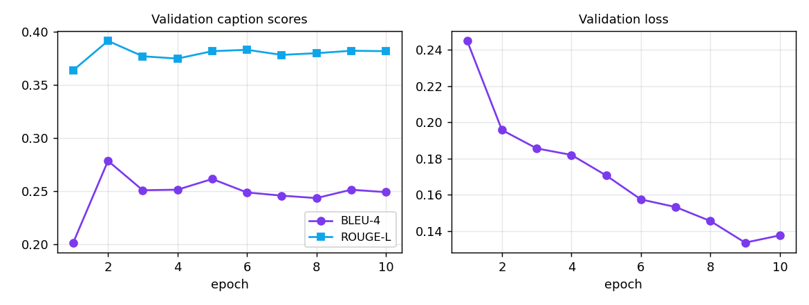

BSc thesis · Vision-language
Real-time Scene Captioning on the Edge
A low-cost ESP32-CAM streams video to a fine-tuned BLIP model that describes the scene in words, a first step toward assistive devices for visually impaired people.
0.25 BLEU-4 · 0.38 ROUGE-L on 1,200 unseen Flickr8k images